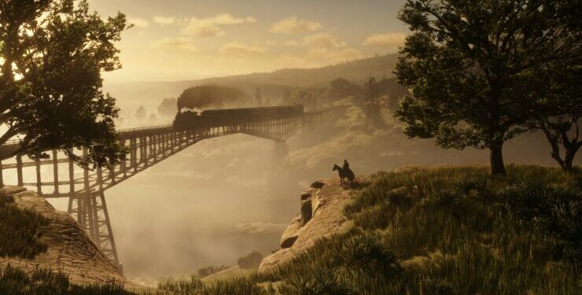
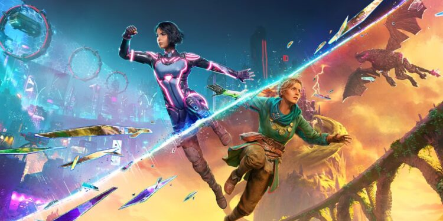

A Ubisoft revelou nesta quinta-feira os números atualizados de Assaassin's Creed Shadows, e o RPG protagonizado por Yasuke Naoe superou a marca de 3 milhões de jogadores em uma semana. Ainda de acordo com o estúdio, Shadows teve a segunda maior receita de vendas "day one (ou seja, no dia do lançamento)" em toda a história da franquia, ficando abaixo apenas de Assassin's Creed Valhalla. Comforme revelado nas redes sociais, Assassin`s Creed Shedows já chegou a 3 milhões de jogadores desde o seu lançamento. O jogo havia alcançado a marca de 2 milhões em 22 de março, o que signofica que conseguiu 1 milhão de jogadores em apenas 5 dias.
A expectativa segue altíssima para GTA 6 e os fãs mal estão se aguentando de ansiedade para viver novas aventuras em Vice City. A Take-Two, dona da Rockstar, já reiterou em mais de uma ocasião que a sequência chega em 2025 — entre outubro e dezembro. No entanto, a incerteza sobre a data pode estar sendo um grande problema para outras empresas do ramo, já que muitas delas não querem competir atenção com o jogo mais aguardado de todos os tempos. Em entrevista recente na GDC para o PC Gamer, Ben Foster, um renomado consultor sênior da Newzoo, sugeriu que um potencial atraso de GTA 6 poderia ser tão impactante que o efeito cascata faria algumas empresas do ramo simplesmente falirem. Segundo ele, estúdios que estão aguardando a chegada da sequência para definir seus lançamentos podem enfrentar dificuldades financeiras caso precisem adiar projetos por mais alguns meses.
|  |  |
|---|---|
| Ex-desenvolvedor de Red Dead Redemption 2 afirma que muitos jogadores sofrem de “fadiga de mundo aberto” e não exploram os mapas. | Split Fiction: Sucesso de Game da Hazelight Studios Ganha Adaptação Cinematográfica! |